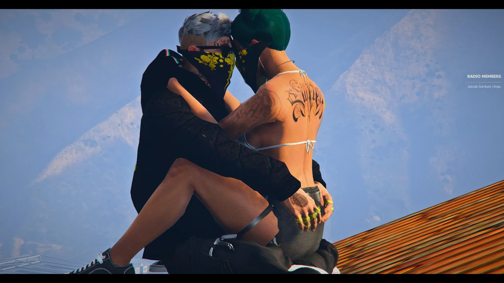
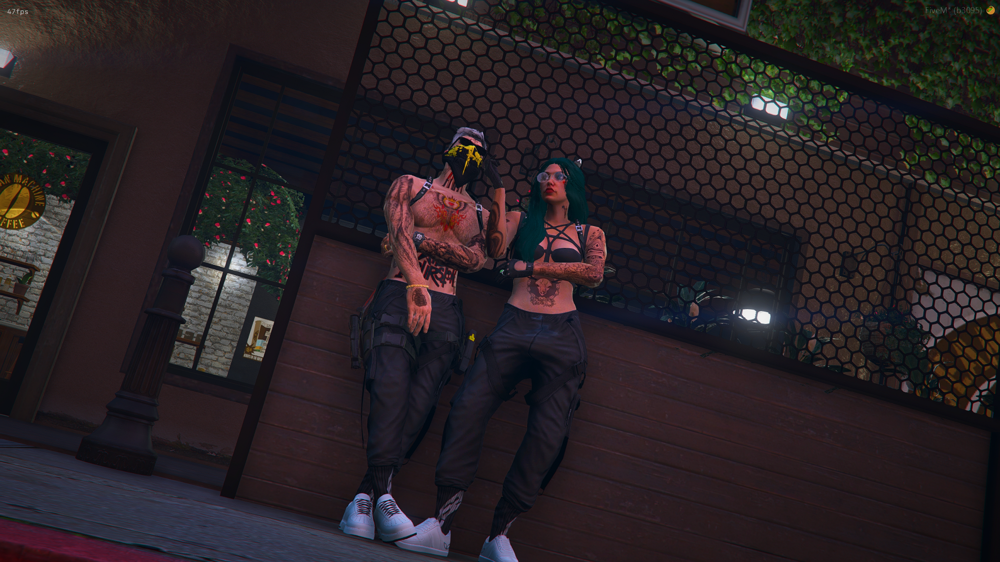
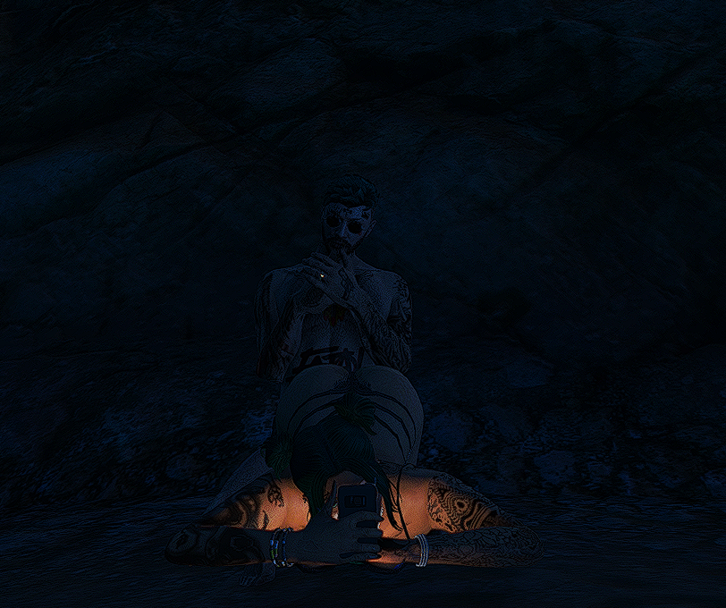

Memories



.webp)
Sabrina, I will always choose you
Forever. No matter what.
I want to tell you this, baby, and I don’t even know why I feel the need to say it out loud. I don’t even know if I’ll ever send you this, but I’m scared to death. I’m scared that one day you’ll really see me for who I am and decide that I’m not good enough for you. I’m scared that you’ll realize there are people out there who are smarter, kinder, more exciting, more stable—people who could give you more than I ever could. I’m scared that one day you’ll wake up and feel like I’m no longer what you want or need.
I’m scared that I won’t be enough to keep you happy, that I’ll fail you in ways I don’t even see coming yet. I’m scared that you’ll slowly grow tired of me, of my flaws, my fears, my mistakes, and that you’ll find someone who makes loving you feel easier. I’m scared of the thought of you smiling the same way you do with me, but for someone else. I’m scared of losing the place I have in your life, of becoming just a memory instead of your choice.
And the scariest part is that none of this comes from a lack of trust in you—it comes from how much I love you. Because loving you means you matter enough to hurt me if I lose you. It means I care so deeply that the thought of a life without you feels unbearable. I don’t say this because I doubt us; I say it because you mean everything to me, and the idea of not being enough for someone who means that much is terrifying.